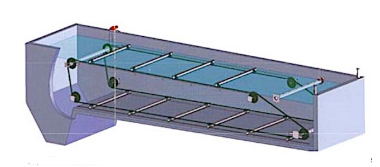
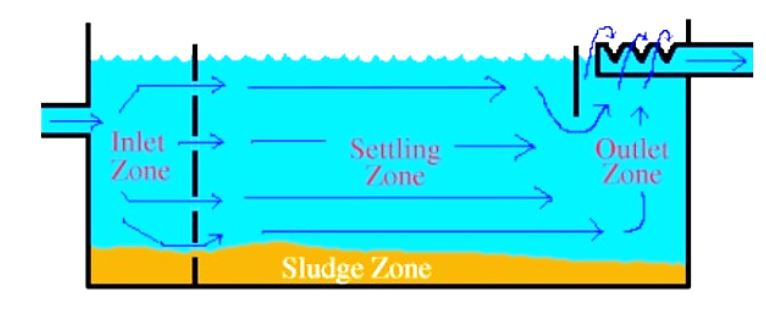

03. Sedimentation
Flocculation ක්රියාවලින්යෙන් පසු මඩ කැටිති (flocs) සෑදුණු ජලය sedimentation tank තුළට ඇතුල්වීම සිදුවේ. මෙහි ප්රධාන අරමුණ මඩ කැටිති තැම්පත් කර ගැනීමයි (settlment).
මේ සඳහා කඳන ජල පවිත්රාගාරය තුළ sedimentation ටැංකි 6ක් භාවිතා කරයි.
මෙම ටැංකිය තුලදී ජලය තිරස් අතට ගලායන අතර මඩ අංශු ගුරුත්වය යටතේ සිරස් අතට ගමන්කර පතුලේ තැම්පත් වීම සිදුවේ.
මෙසේ තැම්පත්වන මඩ ස්ක්රේපර් (Sludge Scraper) මගින් මෙම ටැංකියේ මුල කෙලවරේ ඇති මඩ වල (Sludge Pocket)වෙත ඇදගෙන ගොස් දැමීම නිරන්තරයෙන්ම සිදුකරයි. මෙම වලෙහි මඩ ඉවත් කිරීමට එක් ටැංකියකට හතර බැගින්sludge valves සම්බන්ධ කර ඇත. මේවා වරින් වර වරකට එක බැගින් විවෘතවී මඩ වලෙහි එකතුවෙන මඩ ඉන් ඉවත්කිරීම සිදුකරයි. මෙසේ ඉවත් වන මඩ Balancing Tank එක වෙත එකතු වීම සිදුවේ.
මඩ ඉවත් වී පැහැදුණු ජලය (Settle Water) ටැංකිය කෙලවරින් ඉවත් වීම සිදුවේ. මෙම ඉවත් වන ජලයේද ඉතා කුඩා ප්රමාණයේ මඩ කැඩිති (fine particals) දැක ගැනීමට හැකිවේ. මෙම ඉතා කුඩා මඩ කැඩිති ඉවත්කර ගැනීම සඳහා මෙම ජලය වැලි පෙරණ (Sand Filters) වෙත යොමු කිරීම සිදුකරයි.
Sedimentation ටැංකියට පැමිණෙන ජලයේ (focculated water) හා පිටවන ජලයේ (Settled water)ගුණාත්මකභාවය පැය විසිහතර පුරාම sensor මගින් (pH / Turbidity) නිරීෂණය කරන අතර ප්රධාන පාලක පද්ධතියේ (SCADA) සටහන්වේ.
මීට අමතරව අවශ්යතාවකදී මෙම ටැංකිවලින් පිටවෙන ජලයට ක්ලෝරීන් මුසුකිරීමේ (Intermediate chlorination) පහසුකමද සපයා ඇත.


.jpeg)
Details of the Sedimentation System
-
Type : Rectangular plug flow
No of Tanks : 6 Nos
Tank Dimensions : 10m (W) x 50 m (L) x 4m to 5 m (Eff. Depth)
Surface loading : 29.2 mm/min < 30 mm/min
Passing velocity : 0.365 m/min < 0.4 m/min
Detention time : 2.3 h
Sedimentation outflow : 375m3/m/d < 400 m3/ m/d
Sludge collection pit : 4 Nos of 300x350x400mm(WxDxL)pits in one tank
Baffle wall : One for inflow and one for effluent of basins
Theory Behind Sedimentation
-
Stokes’ Law
-
The process follows Stokes’ Law, which states that the settling velocity of a particle in a fluid depends on:
1. Particle size -larger particles settle faster
2. Particle density -heavier particles settle faster
3. Viscosity of water -colder, more viscous water slows settling
4. Gravity -constant on Earth, but the main driving force
In simple terms, the bigger and denser the particle, the faster it will settle.
-
Improves water clarity
Reduces load on downstream sand filters
Removes disease-causing organisms attached to particles
Lowers chemical usage in later treatment stages (Chlorine)
 
Type I - Discrete Settling : Particles settle individually without interacting (e.g., sand).
Types of Sedimentation
Type II - Flocculent Settling : Particles clump together (flocculate) and settle faster.
Type III - Zone Settling : Particles settle as a mass or blanket.
Type IV - Compression Settling : Occurs when particles are compressed at the bottom due to the weight above.
Importance of Sedimentation
-